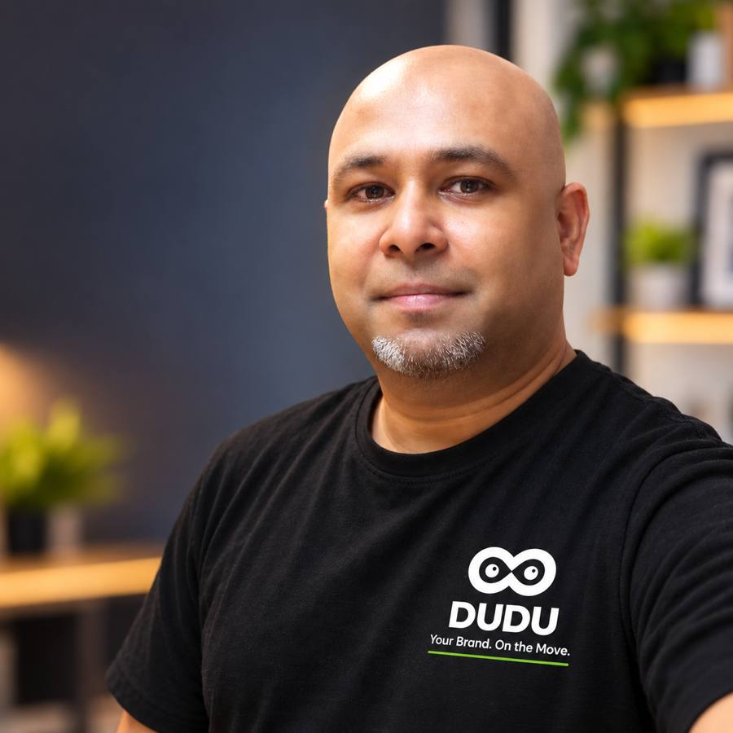

FOUNDER
Pradeep Manoharan
Founder of DUDU Robots, focused on the business vision, delivery concept and turning the idea into a practical real-world project.
[ THE DUDU STORY ]
Behind DUDU is a simple idea: use autonomous delivery technology to solve real problems in the places where people shop, work and eat — then learn from the real world and keep moving forward.
[ FROM IDEA TO REAL WORLD ]
DUDU began from our interest in making delivery inside shopping centres and indoor environments more practical. We started exploring how autonomous mobile robots could connect restaurants, retailers, employees and customers without making every delivery depend on a person walking across the building.
Instead of building the story only on paper, we wanted to take the idea into a real environment. That led us toward our work around Centro Commerciale Globo in Busnago and the connection between DUDU, food and retail delivery, technology partners and real operating needs.
We looked at the everyday movement of food, products and orders inside busy commercial environments and asked how autonomous delivery could make that movement easier.
We researched autonomous mobile robotics and looked for technology that could be adapted to the environments we wanted to serve.
Go Spesa became an important real-world use case for thinking about food and retail delivery, while DUDU developed as the autonomous delivery concept.
Our initial pilot focus is Centro Commerciale Globo in Busnago, where the goal is to test the concept in an everyday shopping-centre environment.
Every real deployment should teach us something. The next stage is to improve the operating model, partnerships and customer experience before expanding to other environments.
[ THE FOUNDERS ]

Founder of DUDU Robots, focused on the business vision, delivery concept and turning the idea into a practical real-world project.
Co-founder of DUDU Robots, contributing to the project vision, operations, communication and the journey from concept to execution.
“DUDU is not just about putting a robot on the floor. It is about asking what should happen next when technology becomes part of everyday life.”
[ THE NEXT FIVE YEARS ]
Our five-year direction is ambitious, but it is intentionally built step by step. We want to prove the model in real environments first, learn from operations, develop strong partnerships and then expand.
Test the initial Busnago use case and learn from real operations.
Refine workflows, technology integration and customer experience.
Explore additional shopping centres and commercial environments in Italy.
Build partnerships with malls, retailers, restaurants, technology companies and brands.
Work toward a scalable autonomous delivery network across Italy and potentially other European markets.
[ LET'S BUILD THE FUTURE ]